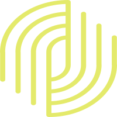
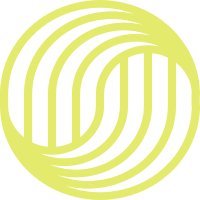

Professionelle Sprachdienstleistungen
Dolmetschen und beglaubigte Übersetzungen
Schnelle und zuverlässige Übersetzungen für offizielle, private und geschäftliche Dokumente
Textflows – Ihr professionelles Übersetzungsbüro mit über 10 Jahren Erfahrung
- ✔ Beglaubigte Übersetzungen
- ✔ Diskretion & Vertraulichkeit
- ✔ Schnell & Zuverlässig
- ✔ Online & vor Ort
Ihr kompetenter Partner für professionelle Sprachdienstleistungen
Sophie Chekurishvili-Yildirim ist staatlich geprüfte und beeidigte Dolmetscherin sowie ermächtigte Übersetzerin für Deutsch, Englisch und Georgisch. Ihre beglaubigten Übersetzungen werden von Behörden, Gerichten, Standesämtern und Universitäten anerkannt.
So einfach geht's:
- Dokument hochladen – Foto oder Scan genügt
- Kostenloses Angebot erhalten – meist innerhalb von 24 Stunden
- Übersetzung erhalten – per Post, zur Abholung oder vorab per E-Mail
Unsere Leistungen
Individuelle & professionelle Sprachdienstleistungen
Bei Textflows stehen individuelle Betreuung und persönliche, bedarfsgerechte Beratung im Mittelpunkt.
Wir bieten maßgeschneiderte Sprachdienstleistungen, einschließlich Übersetzungen und Dolmetscherdienste in allen gängigen Weltsprachen, und begleiten Sie zuverlässig von der Anfrage bis zur Fertigstellung.
Kontaktieren Sie uns für ein unverbindliches Angebot und profitieren Sie von unserer langjährigen Erfahrung im Bereich professioneller Sprachdienstleistungen.
Erfahren Sie mehr
Schriftliche Übersetzungen – präzise, zuverlässig & professionell
Unsere schriftlichen Übersetzungen werden individuell an Kontext, Zielgruppe und kulturelle Besonderheiten angepasst.
Unser erfahrenes Team bietet professionelle Fachübersetzungen in allen gängigen Weltsprachen, darunter Deutsch, Englisch, Georgisch und viele weitere.
Wir garantieren präzise, zuverlässige und hochwertige Übersetzungen für Unternehmen, Behörden und Privatkunden.
Erfahren Sie mehr
Mündliches Dolmetschen – professionell, diskret & zuverlässig
Mit unseren Dolmetschdiensten gewährleisten wir eine präzise, professionelle und kultursensible Kommunikation in geschäftlichen, medizinischen, rechtlichen sowie privaten Bereichen in allen gängigen Weltsprachen.
Erfahren Sie mehr
Öffnungszeiten
Montag - Freitag: 9:00 - 17:00 Uhr
Samstag: 9:00 - 14:00 Uhr
Termine nach Vereinbarung
Unsere Merkmale – Qualität, Zuverlässigkeit und Professionalität
Qualitätssicherung
Wir garantieren hochwertige Übersetzungen und Dolmetschdienste durch erfahrene Fachkräfte.

VertraulichkeitWir gewährleisten vollständige Diskretion und Datenschutz für alle Dokumente und Gespräche.

Termingerechte AusführungProjekte werden pünktlich und zuverlässig abgeschlossen, damit Sie Ihre Fristen immer einhalten können.
Interkulturelle Kompetenz
Unser Team verfügt über tiefgehendes interkulturelles Wissen für präzise und kultursensible Kommunikation.